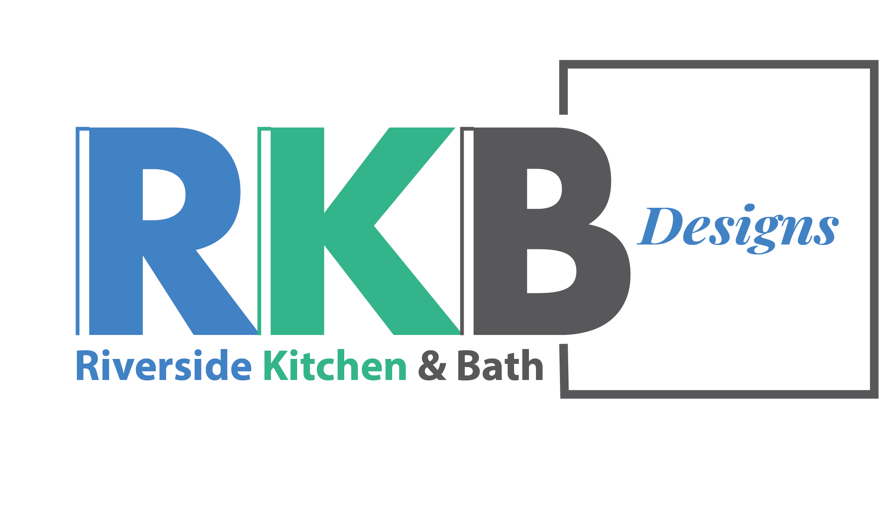
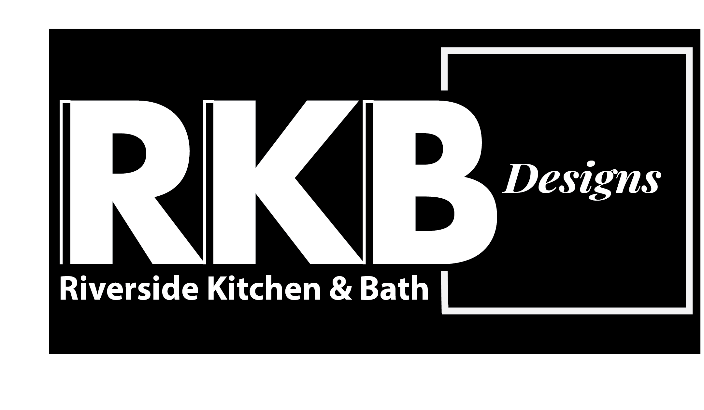
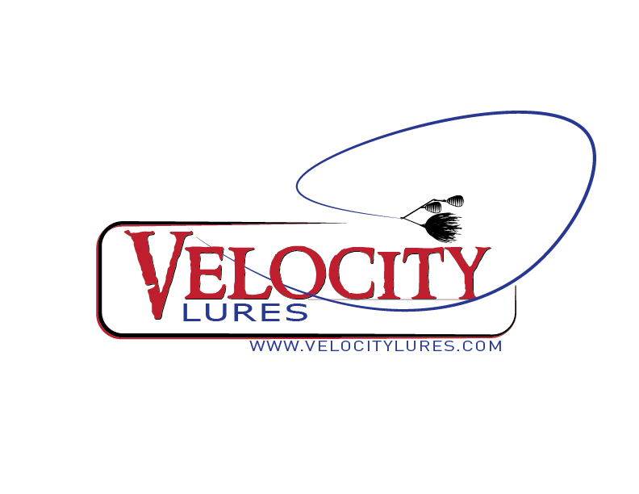
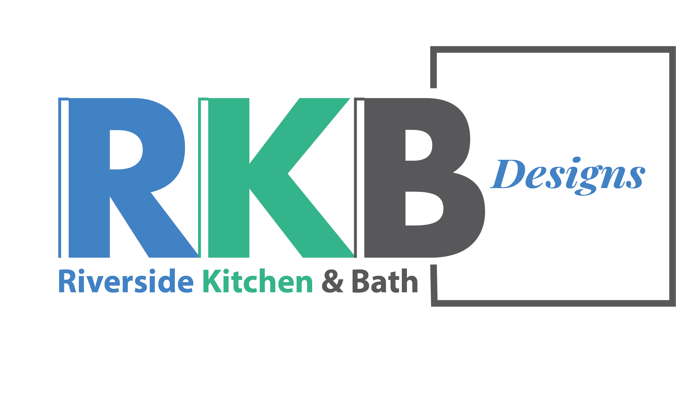
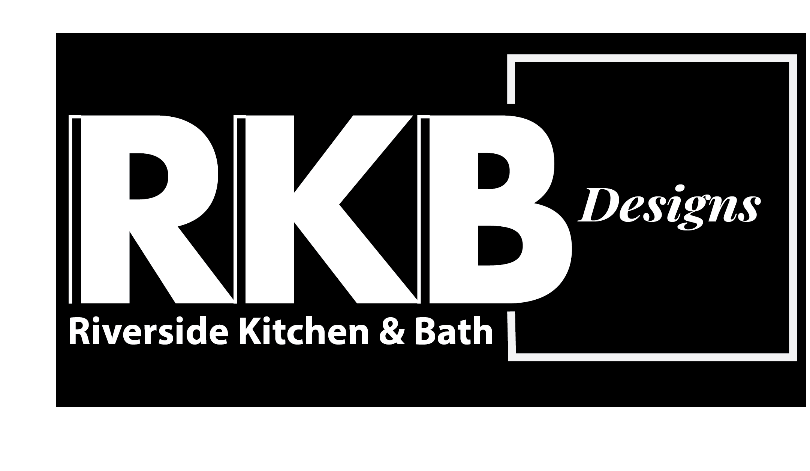
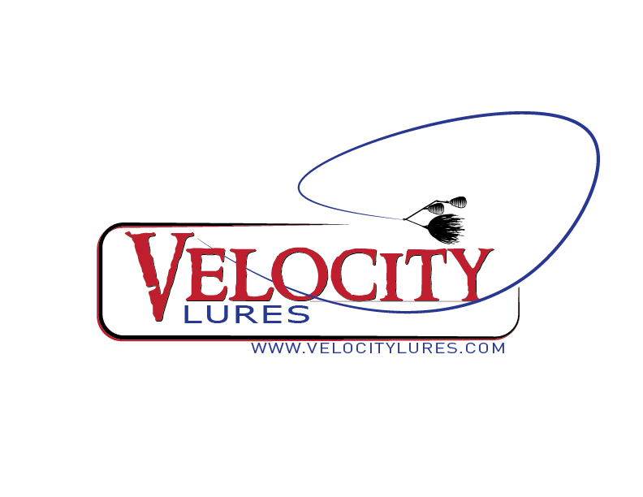

The logo design process is a thoughtful blend of creativity and strategy, ensuring that every design choice aligns with the company’s voice and brand identity. By considering the target audience, the logo becomes a visual representation that resonates with them, while incorporating the principles of color psychology further enhances its impact. Each element is carefully crafted to reflect the company’s values and message, creating a logo that not only stands out but also fosters an emotional connection with its audience.


